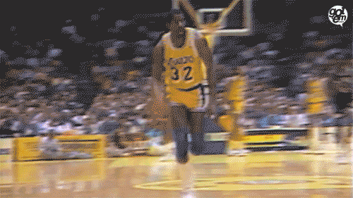
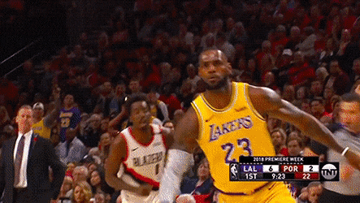

Kobe Bryant

A shooting guard, Bryant entered the National Basketball Association (NBA) directly from high school, and played his entire 20-season professional career in the league with the Los Angeles Lakers.
Bryant won five NBA championships, was an 18-time All-Star, 15-time member of the All-NBA Team, 12-time member of the All-Defensive Team, was named the 2008 NBA Most Valuable Player (MVP), and was a two-time NBA Finals MVP winner.
Widely regarded as one of the greatest players of all time, he led the NBA in scoring during two seasons, ranks fourth on the league's all-time regular season scoring, and ranks fourth on the all-time postseason scoring list.In 2006, he scored a career-high 81 points; the second most points scored in a single game in league history, behind Wilt Chamberlain's 100-point game in 1962.
Shaquille O'neal

At 7 ft 1 in (2.16 m) tall and 325 pounds (147 kg), he was one of the tallest and heaviest players ever. O'Neal played for six teams over his 19-year career.
After four years with the Magic, O'Neal signed as a free agent with the Los Angeles Lakers. They won three consecutive championships in 2000, 2001, and 2002.
The Lakers won 56 games during the 1996–97 season. O'Neal averaged 26.2 points and 12.5 rebounds in his first season with Los Angeles; however, he again missed over 30 games due to injury. The Lakers made the playoffs, but were eliminated in the second round by the Utah Jazz in five games. In his first playoff game for the Lakers, O'Neal scored 46 points against the Portland Trail Blazers, the most for the Lakers in a playoff game since Jerry West had 53 in 1969.
O'Neal was also voted the 1999–2000 regular season Most Valuable Player, one vote short of becoming the first unanimous MVP in NBA history. Fred Hickman, then of CNN, instead chose Allen Iverson, then of the Philadelphia 76ers who would go on to win MVP the next season. O'Neal also won the scoring title while finishing second in rebounds and third in blocked shots. Jackson's influence resulted in a newfound commitment by O'Neal to defense, resulting in his first All-Defensive Team selection (second-team) in 2000.
Magic Johnson
He played point guard for the Lakers for 13 seasons. After winning championships in high school and college, Johnson was selected first overall in the 1979 NBA draft by the Lakers.
He won a championship and an NBA Finals Most Valuable Player Award in his rookie season, and won four more championships with the Lakers during the 1980s.
Johnson's career achievements include three NBA MVP Awards, nine NBA Finals appearances, twelve All-Star games, and ten All-NBA First and Second Team nominations. He led the league in regular-season assists four times, and is the NBA's all-time leader in average assists per game, at 11.2. Johnson was a member of the 1992 United States men's Olympic basketball team ("The Dream Team"), which won the Olympic gold medal in 1992. Greatest Laker ever.
Lebron James
LeBron Raymone James Sr. is an American professional basketball player for the Los Angeles Lakers of the National Basketball Association (NBA). He is widely considered to be one of the greatest basketball players in NBA history. Discussions ranking him as the greatest basketball player of all time have often been subject to significant debate, with frequent comparisons to Michael Jordan.His accomplishments include three NBA championships, four NBA MVP Awards, three NBA Finals MVP Awards, and two Olympic gold medals. Lebron's teams appeared in eight consecutive NBA Finals (2011-2018 seasons).
Lebron leads with the record for all-time NBA playoffs points scored, is third in all-time NBA points scored, and eighth in all-time NBA assists. James was selected to the All-NBA First Team a record twelve times, made the All-Defensive First Team five times, played in sixteen NBA All-Star Games as All-Star MVP three times.
James won his first two NBA championships while playing for the Heat in 2012 and 2013; in both of these years, he also earned league MVP and Finals MVP. After his fourth season with the Heat in 2014, James opted out of his contract to re-sign with the Cavaliers. In 2016, he led the Cavaliers to victory over the Golden State Warriors in the NBA Finals by coming back from a 3–1 deficit, delivering the franchise's first championship and ending Cleveland's 52-year professional sports title drought. In 2018, James opted out of his contract with the Cavaliers to sign with the Lakers.